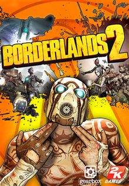

Košík
Borderlands 2

Co to je ?
Borderlands 2 je akční dynamická střílečka z pohledu první osoby z roku 2012 vyvinutá firmou Gearbox stejně jako první díl.
Využívá hodně prvků z RPG. Hráč si může svou postavu vylepšovat podle svého vlastního vkusu a herního stylu.
Hra rovněž stejně jako jednička využívá možnost kooperativního multiplayeru, kdy si můžete přizvat kamaráda do své zrovna rozpracované mise a nechat si pomoct například při obtížných bojích.
Požadavky
Operační systém: Windows Vista, 7
Procesor: Quad Core - 2.3 Ghz
Grafika: nVidia GeForce GTX 560 / ATi Radeon HD 5850
RAM: 2 GB
HDD: 20 GB
Cena
199.00 Kč